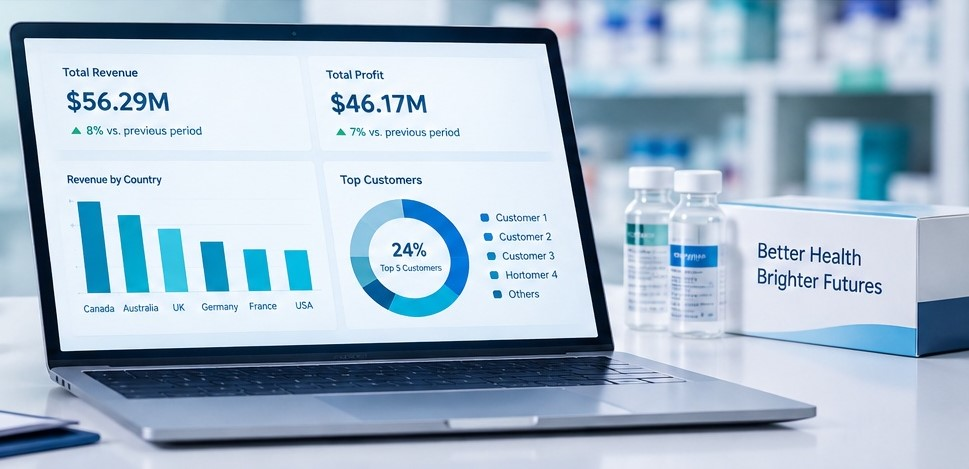

CLIENT PROJECT 03
Sales Performance Analysis & Reporting

Project Description
The Client wanted to use its sales and customer data to improve demand forecasting, inventory management, customer engagement and overall business performance. The project combined sales and customer analysis to identify where revenue and profit were concentrated and where opportunities existed for sustainable growth.
Business Need
The Client needed a consolidated view of sales, profitability, customer behaviour, product performance and geographic contribution. This would help management understand which products and customers were driving the business, identify weaker areas and improve decisions around inventory, retention and market growth.
Approach
We analysed Power BI dashboards covering sales performance and customer behaviour across products, customers, demographics and six geographic markets. We examined revenue, cost, profit, quantity sold, customer concentration, product performance and market contribution, then translated the findings into recommendations for inventory planning, customer retention, product optimisation and market expansion.
Responsibilities
- Analysed total revenue, cost, profit and quantity sold.
- Reviewed monthly revenue and profit trends.
- Evaluated high- and low-performing products.
- Analysed customer revenue concentration and purchasing behaviour.
- Reviewed customer demographics, age groups and customer types.
- Analysed geographic sales performance across six countries.
- Identified areas of customer and market concentration.
- Translated dashboard findings into practical business recommendations.
- Supported the development of an executive-level analytical narrative.
Projected Achievements
Key analytical findings supporting the recommendations: The Client reported $56.29M in revenue, $46.17M in profit and 213K units sold. The top five customers represented approximately 24% of total revenue, while Canada and Australia together accounted for 72% of total revenue. The analysis also identified significant differences between top and lower performing products.
- Target a 5–10% improvement in inventory efficiency by prioritising high-demand and high-profit products and aligning stock levels with recurring demand patterns.
- Target a 5–10% increase in revenue from high-value customers through personalised engagement and customer-retention initiatives.
- Improve product portfolio performance by reviewing lower-performing products for pricing, cost reduction or portfolio optimisation opportunities.
- Reduce exposure to customer concentration risk by developing retention strategies while expanding relationships across additional customer segments.
- Target a 5–10% increase in revenue contribution from growth markets by applying the analysis of stronger-performing markets to expansion planning.
- Improve decision-making through continuous monitoring of revenue, profit, customer behaviour, product performance and geographic trends.